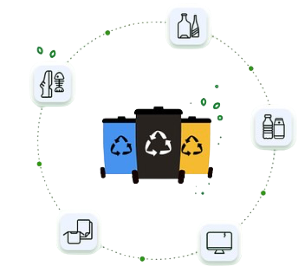
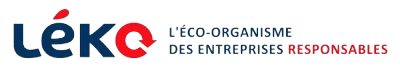
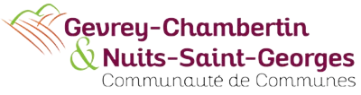
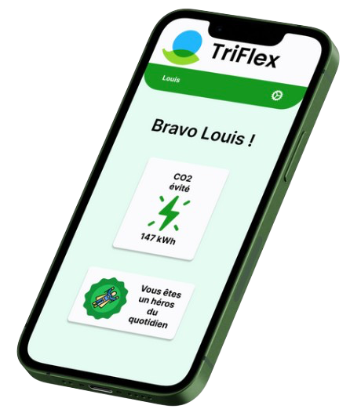
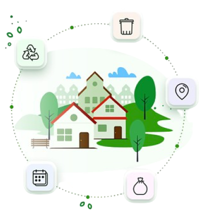
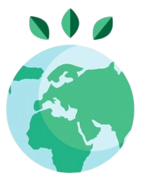

TriFlex est une entreprise française innovante qui révolutionne le recyclage des emballages et des produits grâce à une application numérique intuitive. Notre mission est de faciliter le recyclage pour tous, en rendant le processus plus accessible, pratique et gratifiant.
Pourquoi Soutenir TriFlex ?
Responsabilité Élargie du Producteur (REP) : Vous vendez en France des produits emballés et consommés par les ménages ? Vous faites éditer pour votre compte des papiers imprimés (catalogues, notices, affiches, etc.) ? Alors, vous avez l’obligation de gérer et financer la fin de la vie de vos emballages et papiers : c'est ce qu'on appelle la Responsabilité Élargie du Producteur (REP), prévue par le Code de l’environnement depuis 1992 (articles L.541-10 et L.541-10-1). TriFlex, vous accompagne pour la fin de vie de vos emballages, papiers et produits recyclables. Concrètement, en financent TriFlex, vous nous transférez une partie de votre responsabilité en contrepartie d’une contribution financière. C’est grâce à votre financement que TriFlex par le biais des consommateurs peut motiver et engager les personnes dans le tri de recyclage. Permettant ainsi le développement du réemploi de vos emballages, papiers et produits.
Impact environnemental : Votre soutien permettra de réduire significativement les déchets et de préserver les ressources naturelles, renforçant ainsi votre image éco-responsable.
Innovation Technologique : Investir dans TriFlex, c’est promouvoir une application avant-gardiste qui encourage des comportements éco-responsables.
Avantages pour les Organismes Donateurs
Accompagnement et Retour Utilisateur : Bénéficiez de notre expertise pour éco-concevoir vos produits et communiquer efficacement sur leurs caractéristiques environnementales.
Reconnaissance Publique : Associez-vous à une entreprise engagée dans la protection de l’environnement et recevez une reconnaissance pour votre contribution à l’économie circulaire.
Avantages fiscaux : Profitez d’un reçu fiscal pour chaque don, permettant une déduction fiscale et offrant un bénéfice financier immédiat.
Rejoignez-nous dans cette Aventure
En participant à la mission de TriFlex, vous jouez un rôle clé dans la promotion d’un avenir durable. Votre engagement démontre une responsabilité sociale et un soutien à l’innovation.
Ils nous font confiances


Vous aussi faite partie du mouvement que vous soyez une entreprise, une communauté de commune, la Chambre de Commerce et d’Industrie, ect…, Rejoignez-nous !
Les éléments clés qui soutiennent la pérennité de TriFlex
Innovation Technologique
L’application permet de scanner les codes-barres ou de taper le nom du déchet dans la barre de recherche pour connaître les consignes de tri et localiser les points de collecte, intégrant ainsi la technologie dans le quotidien des utilisateurs pour faciliter le recyclage.
Engagement environnemental
TriFlex est engagé dans la protection de l’environnement, cherchant à réduire l’empreinte écologique à travers des actions concrètes et des solutions éco-responsables.
Impact Social
En encourageant des comportements éco-responsables, TriFlex vise à avoir un impact positif sur la société, rendant le recyclage accessible à tous.
Éco-conception
Le site et l’application sont éco-conçus pour minimiser l’empreinte carbone tout en offrant une expérience utilisateur de qualité, reflétant l’engagement écologique de l’entreprise.
Ces aspects démontrent que TriFlex est conçu avec une vision à long terme, cherchant à intégrer durablement le recyclage dans le style de vie moderne et à contribuer activement à la préservation de l’environnement.
Production de déchets : En 2020, la France a produit 310 millions de tonnes de déchets.
Taux de recyclage : Le taux de recyclage des emballages ménagers était de 65,5 % en 2022.
Économie d’énergie : Chaque année, le secteur du recyclage permet à la France d’économiser l’équivalent de 14 réacteurs nucléaires.
Emploi : Le recyclage a contribué à la création de plus de 110 000 emplois directs.
Ces données indiquent que le marché du recyclage en France est non seulement viable, mais aussi porteur d’opportunités pour le développement de notre application dédiée au recyclage. Avec une tendance croissante à la simplification du tri et une prise de conscience écologique, une application de recyclage pourrait répondre à un besoin croissant de solutions pratiques et efficaces pour la gestion des déchets.

L’intérêt pour une communauté de communes de financer une application comme TriFlex est multiple et significatif
Réduction de l’Impact Environnemental : Les communautés de communes sont à la recherche de solutions pour réduire l’impact environnemental des déchets. Financer TriFlex peut aider à atteindre cet objectif en encourageant le recyclage, ce qui peut également créer des emplois locaux.
Développement Durable : En soutenant une application de recyclage, la communauté de communes démontre son engagement envers le développement durable et la gestion responsable des ressources.
Économies financières : Les subventions pour des projets comme TriFlex peuvent couvrir jusqu’à 60 % des dépenses éligibles, ce qui représente une opportunité financière pour la communauté de communes.
Amélioration de la Gestion des Déchets : TriFlex peut offrir des solutions innovantes pour le tri, la collecte, et le recyclage des déchets, contribuant ainsi à une gestion plus efficace et écologique. De plus, l'application permet de limiter les dépôts sauvages et les frais engendrés.
Engagement Citoyen : L’application peut stimuler l’engagement citoyen en rendant le recyclage plus accessible et gratifiant, ce qui renforce le lien entre la communauté de communes et ses résidents.
Attractivité Territoriale : Une communauté de communes qui investit dans des technologies vertes peut améliorer son attractivité et son image, attirant ainsi de nouveaux résidents et entreprises soucieux de l’environnement.
En résumé, financer TriFlex peut aider une communauté de communes à atteindre ses objectifs environnementaux, à réaliser des économies, et à renforcer son engagement envers ses citoyens et le développement durable.
L’intérêt pour la Chambre de Commerce et d’Industrie (CCI) de financer une application de recyclage comme TriFlex est multiple et aligné avec ses missions de soutien au développement économique et à l’innovation
Soutien à l’Innovation : En finançant TriFlex, la CCI favorise l’innovation technologique et soutient les entreprises qui développent des solutions durables.
Développement Durable : TriFlex contribue à la transition écologique, un enjeu majeur pour les CCI qui cherchent à promouvoir des pratiques éco-responsables au sein du tissu économique.
Attractivité Territoriale : En soutenant des projets verts, la CCI renforce l’attractivité de la région pour les investisseurs et les talents sensibles aux questions environnementales.
Responsabilité Sociale des Entreprises : La CCI peut encourager les entreprises à adopter une démarche de responsabilité sociale en soutenant des initiatives comme TriFlex, qui ont un impact positif sur la société et l’environnement.
Avantages fiscaux : Les entreprises bénéficient d’une réduction d’impôt pour les dons affectés aux œuvres et organismes d’intérêt général, ce qui inclut les initiatives de développement durable comme TriFlex.
Éducation et Sensibilisation : La CCI peut utiliser TriFlex comme un outil pour éduquer et sensibiliser les entreprises et le grand public sur l’importance du recyclage et de la gestion des déchets.
En résumé, le financement de TriFlex par la CCI s’inscrit dans une démarche globale de soutien à l’économie verte, à l’innovation et à la responsabilité sociale, tout en offrant des avantages fiscaux et en contribuant à l’attractivité de la région.
Investir dans TriFlex, c’est contribuer à un avenir durable tout en s’associant à une entreprise engagée dans la protection de l’environnement et l’innovation technologique.
Alors, soutenez nous, en participant à la mission de TriFlex, les organismes institutionnels jouent un rôle clé dans la promotion d’un avenir durable et bénéficient d’une reconnaissance pour leur contribution à l’économie circulaire.

Investir dans TriFlex, c’est contribuer à un avenir durable tout en s’associant à une entreprise engagée dans la protection de l’environnement et l’innovation technologique.
Alors soutenez nous, en participant à la mission de TriFlex, les organismes institutionnels jouent un rôle clé dans la promotion d’un avenir durable et bénéficient d’une reconnaissance pour leur contribution à l’économie circulaire.